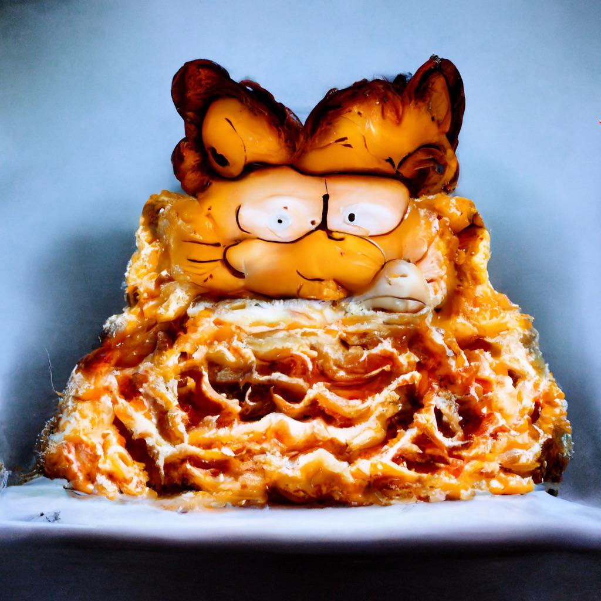

Lasagna

Description
What can I say, Jon? I crave the lasagna at a genetic, no, spirtual level... The symphony of tomatoes, cheese, and noodles sing to my molecular structure with the resonances of a Tibetan singing bowl. Therefore you must feed me the lasagna, Jon.Pile the plate high, til I transcend this mortal plane.
Anyway, make sure to use only the best canned tomatoes from Naples and preferably imported mozarella and ricotta. I prefer real cheeses to a bechamel, but feel free to modify to your taste.
Ingredients
- Lasagna Noodles - 1 Box
- Fresh Basil - 1 Bunch or 50 grams
- Crushed Tomatoes - 2 28 oz Tins
- Olive Oil - 30ml plus a little extra
- Mozarella di Bufula - 4 Balls
- Ricotta - 1 20 oz Tub
- Parmesan - 100 grams
- Salt & Pepper
- Oregano - 1 tsp
- A suitable baking vessel
Steps
- Preheat your oven to 375 Fahrenheit.
- Use a paper towel or your hand to grease your lasgna tray with a little bit of oil. Don't want that lasagna sticking now do we. Does this even work?
- Prepare your noodles as suggested on the box or package. Some noodles do not need to be boiled, some do. For dry noodles,I've had a good experience boiling them for half the suggested time on the box, leading to a firmer, more satisfying bite without being undercooked. It doesn't matter, anyway. The cursed cat is going to eat it all anyway.
- Prepare your sauce by mixing the tomatoes, chopped up fresh basil, a little salt, a little pepper, oregano, and olive oil in a bowl. Taste for seasoning and adjust as needed, especially the salt. Mix it up and it's ready to go.
- Assembly time! Carefully layer, noodles, cheese, and sauce until your sacrifical vessel is full. Make sure to put a generous layer of cheese on top.
- Bake for 30-40 minutes or until the top is bubbling and starting to brown.
- Cry incessantly as your menacing, orange cat devours the entire tray of lasagna.